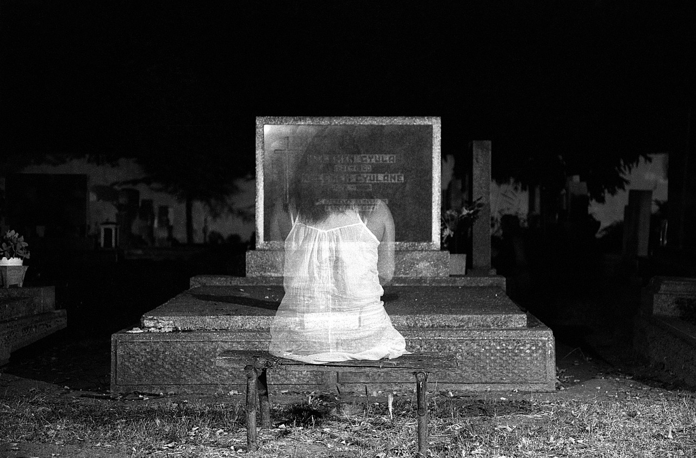

La siguiente leyenda puede variar, como es normal en la mayoría de las historias populares. Los protagonistas suelen ser una chica con un vestido o un chico con una capa, pero la trama es la misma. Desde FCINCO, nos quedamos con la joven. La protagonista, cuyo nombre se desconoce, era una joven tímida. Por el trabajo de su padre, ella y su familia cambiaban constantemente de ciudad y de amigos.
LA SONRISA DEL PAYASO
19/12/2023[Javier.T.]
La historia de la sonrisa del payaso es un clásico en los colegios mayores de Madrid, aunque se ha ido extendiendo al resto la comunidad universitaria.
Una joven esperaba el autobús de noche en una de las marquesinas de la zona de Metropolitano, el principal núcleo de colegios mayores de la capital. La zona está rodeada de los parques que forman el campus universitario y, junto con las facultades vacías, logran un perfecto escenario de película de terror.
LA NIÑA DE LA CUEVA

19/12/2023[Javier.T.]
La leyenda de la niña de la curva es, sin duda, la más célebre de todas las historias de terror. No hay Halloween en que no se escuche esta misteriosa historia, y puede que haya sembrado el pánico en más de un Blablacar. Como muchas historias populares, se desconoce su autor y la localización del suceso. Se cuenta en decenas de países. En Suecia donde se la conoce como Vita frun; en Italia, donde la llaman la Dama Bianca; en República Checa, que la bautizó Bílá paní...
NO SÓLO LOS PERROS LAMEN
19/12/2023[Javier.T.]
La siguiente historia muchos la localizan en una pequeña localidad francesa pero, como todas las demás, el boca a boca ha borrado la pista de su origen. Una niña de 9 años es la protagonista de la leyenda. La pequeña era la única hija de un matrimonio con gran influencia política y una ajetreada vida social que hacía que la niña pasase demasiado tiempo sola.
VERÓNICA ANTE EL ESPEJO
19/12/2023[Javier.T.]
La leyenda de Verónica es una de las más populares entre quienes disfrutan de ese escalofrío de terror en la espalda. De nuevo, su origen y autoría permanecen desconocidos. La historia cuenta que una niña llamada Verónica participó en una sesión de Ouija sin tomarse en serio la invocación, y fue asesinada en extrañas circunstancias delante de todos los participantes.